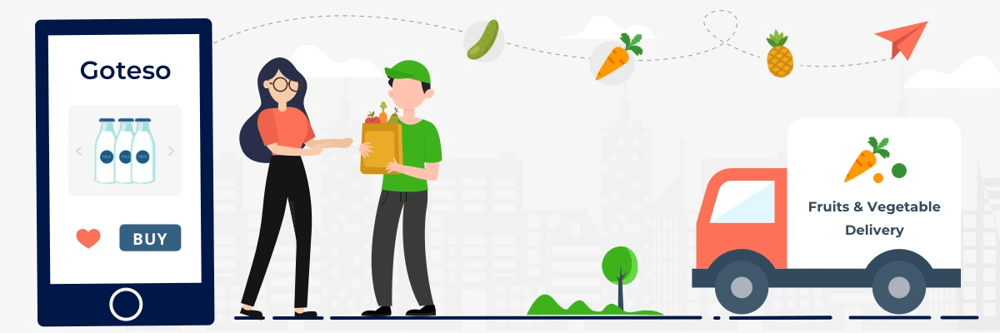

Say Hi To 👋
Fresh Vegetables Store !! 🧺🍅🍆🥔🥕
Delivery-Partners:
India's Best raw vegetables wholesale market.
Build with full stack tech. With best logistics, and well maintained hygiene

India's Best raw vegetables wholesale market.
Build with full stack tech. With best logistics, and well maintained hygiene
Discover the freshest selection of farm-to-table goodness at our vegetable delivering website. Experience convenience and health combined as we bring locally sourced, organic vegetables straight to your doorstep. With a wide variety of seasonal produce, hand-picked for quality, your meals will be bursting with flavor and nutrition. Start your culinary journey today and elevate your cooking with our exceptional vegetable offerings.